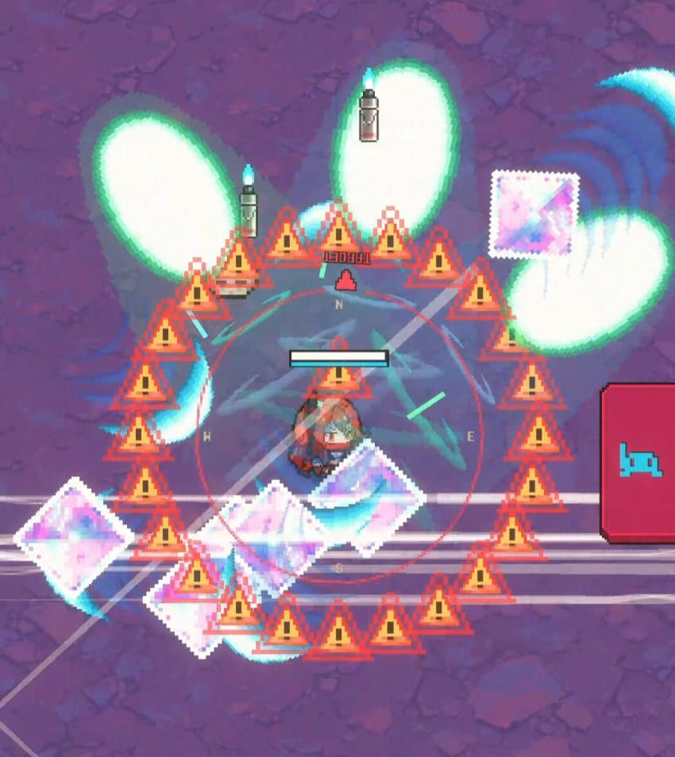
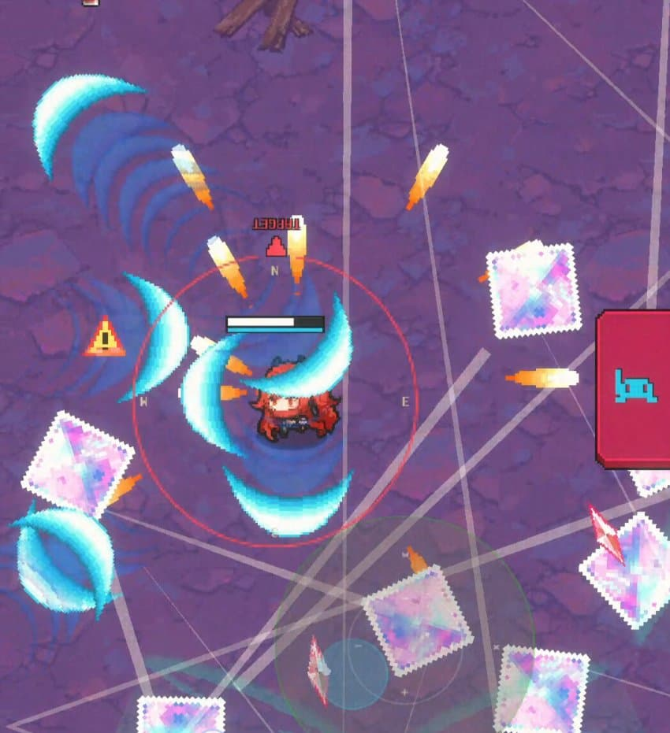
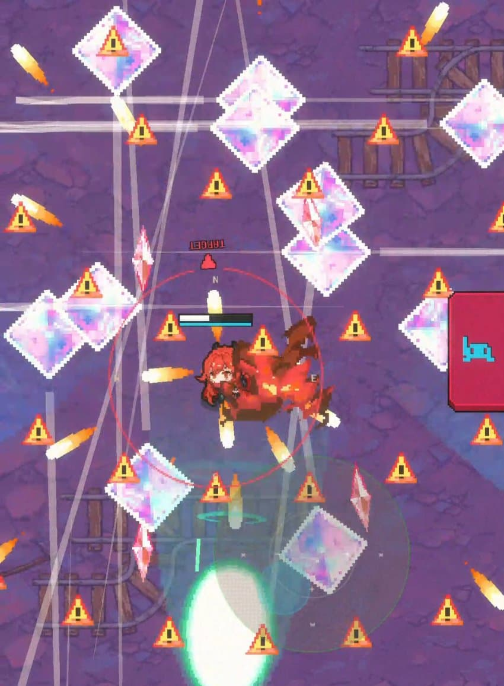

1. 순간이동

캐릭터 주위로 저렇게 느낌표가 뜨면 크챔이 네 번 순간이동 하면서 수정을 뿌린다는 거임
파훼법은 그냥 크챔 순간이동 끝날 때까지 쭉 밑으로 도망가면 댐
2. 연속 순간이동

크챔 때리다보면 어느순간 얘가 순간이동이 끝나자 마자 또 순간이동을 사용함
이때 연속 순간이동이 끝나면 캐릭터 주위에 느낌표 하나가 뜰거임
느낌표 방향에 바위기둥이 생성된다는 건데 이거 부시는거 아님
보스 위치 알려주는 화살표를 바위기둥 바라보게 하면 탄막해줌
첨에 솔레 생각하고 좀 치다가 안부서지길래 도망갔는데 바위기둥 뒤로 안가면 무조건 죽음 ㅅㅂ
3. 세로모드는 꺼져

2번 패턴 후에 계속 때리다보면 갑자기 화면 전체에 주의 표시가 뜰거임
이제 사방에서 수정이 온다는 소리임
이게 개같은게 가로모드로 하면 패턴이 보이는데 세로모드는 존나 헷갈림
(세로모드로 했을 때)
(가로모드로 했을 때)
이 패턴만 넘기면 크챔 깬거임
템은 수정 피하는게 중요해서 신발 많이 먹으면 좋고
무기는 펄스캐논 + 잡몹처리용이 좋은듯
크챔 아래에서 계속 펄스캐논 날리면 쉽게 깸